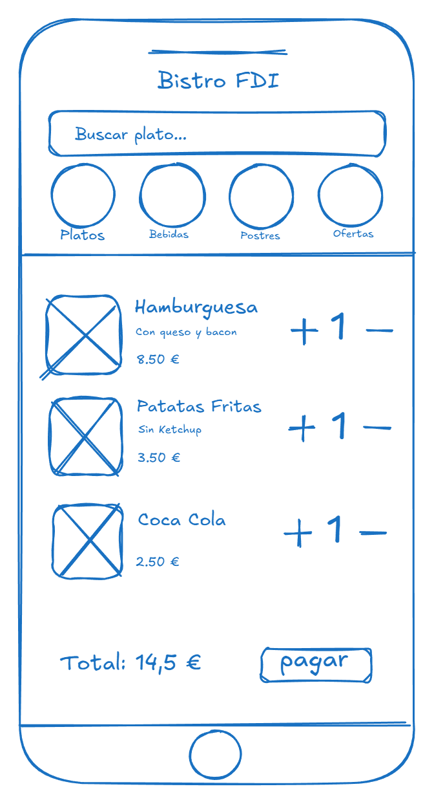
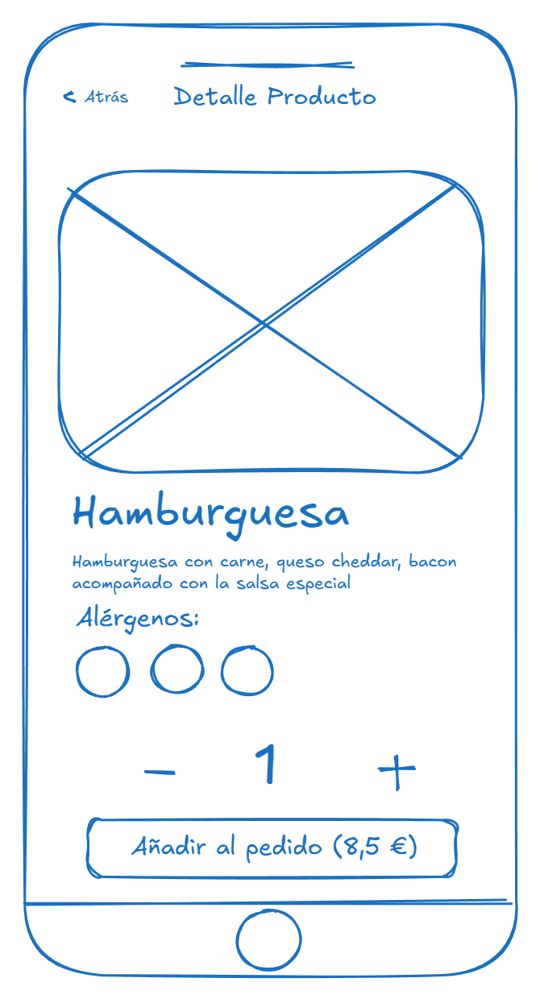
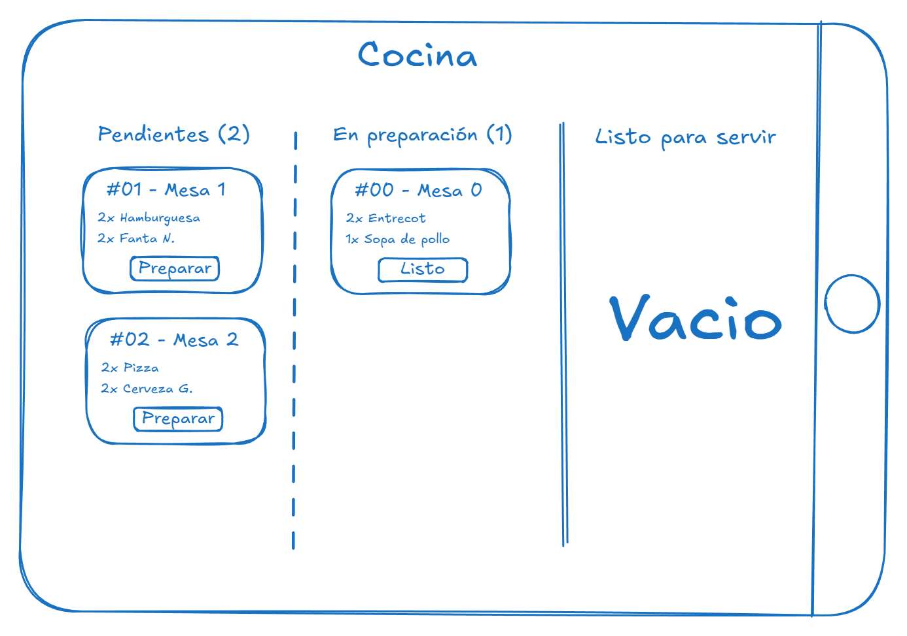
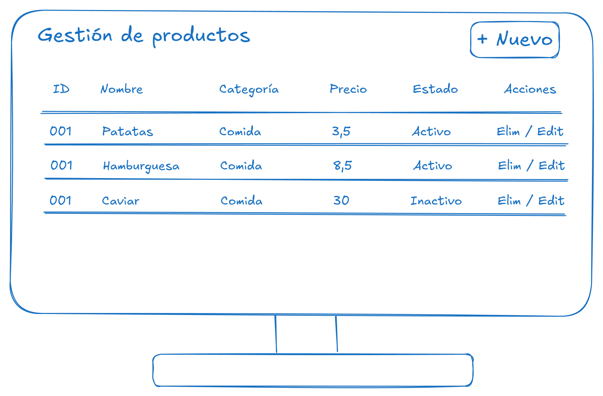

A continuación se presentan los bocetos de baja fidelidad ("wireframes") diseñados para las vistas principales de la aplicación.
El diseño es "Mobile First" para los clientes y adaptado a tablets para el personal de cocina.
1. Interfaz del Cliente (Móvil)
Flujo de navegación: El usuario accede a la Home > Selecciona una categoría > Elige un producto > Lo añade al carrito > Confirma pedido.

Figura 1: Catálogo Principal. Se observa la barra de navegación superior por categorías
y el listado vertical de productos. En la parte inferior, una barra persistente muestra el resumen del carrito.

Figura 2: Detalle de Producto. Vista al pulsar sobre un plato. Permite ver la foto ampliada,
leer alérgenos y seleccionar la cantidad antes de añadir al pedido.
2. Interfaz de Cocina (Tablet)
Flujo de trabajo: El cocinero ve los pedidos nuevos en la columna izquierda > Pulsa "Cocinar" (pasa al centro) > Al terminar pulsa "Listo" (pasa a la derecha).

Figura 3: Dashboard de Cocina (Formato Apaisado). Diseño tipo tablero Kanban con tres columnas de estado.
Las tarjetas incluyen el número de pedido y la lista de platos a preparar. Los colores (no visibles en el boceto) indicarán el tiempo de espera.
3. Interfaz de Gerencia (Escritorio)
Funcionalidad: Gestión administrativa para pantallas grandes. Permite el CRUD completo de productos.

Figura 4: Panel de Administración. Vista de tabla clásica para la gestión de inventario.
Incluye menú lateral de navegación y área de trabajo central para editar, borrar o crear nuevos items.